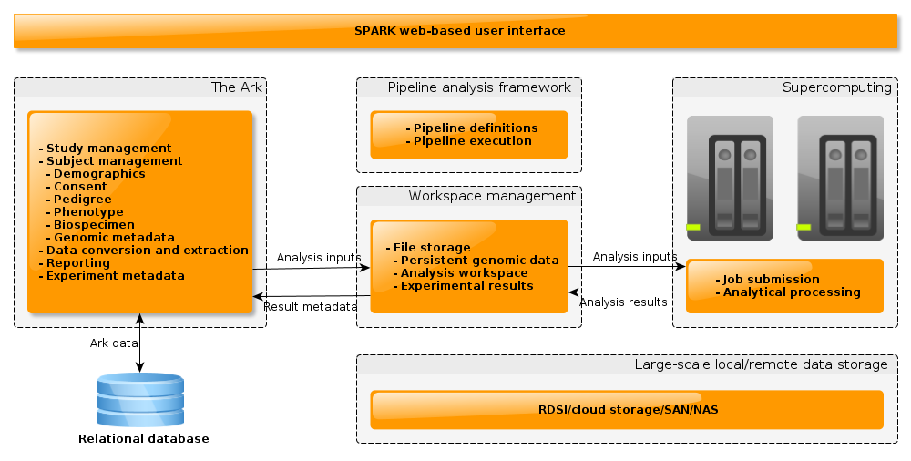

Existing tools to analyse genomics data, and high-dimensional medical data in general, commonly suffer from several one or more major problems. They:
- Often require a high level of computing expertise to operate.
- Are limited in the types of analysis available. This is compounded by the fact that integrating new analysis methods is not straightforward.
- Do not facilitate account for higher-order modeling, e.g. analysis of SNP interactions.
- Do not exploit the computing power of massively parallel architectures, e.g. supercomputers. Since consumer-level computers are most commonly used to perform analysis, hard restrictions exist on the computational complexity that an analysis may have. The analysis of very large datasets and interactions between data points becomes infeasible.
The Supercomputer Pipeline for The Ark (SPARK) Project is an enabling and translational tool for medical research. SPARK builds on existing Australian supercomputing resources and analysis techniques currently available or being developed. It builds these into The Ark, an open-source web-based system designed to manage medical data. SPARK will allow researchers across the world easy access to these data management and analysis tools while eliminating the need for high-level informatics and programming skills. The project will benefit health and medical research by eliminating the burden of large scale data management, querying, cleaning, and analysis.
SPARK is currently in development as the focus of a PhD project hosted at the Centre for Epidemiology and Biostatistics.

The SPARK Architecture
SPARK Publications
- Thilina Ranaweera, Enes Makalic, John Hopper, Adrian Bickerstaffe, 'SPARK: An Open-Source Knowledge Discovery Platform That Leverages Non-Relational Databases and Massively Parallel Computational Power for Heterogeneous Genomic Datasets', Oral presentation at ICHMI 2016 : 18th International Conference on Health and Medical Informatics, Singapore, 8–9 September, 2016.
- Thilina Ranaweera, Enes Makalic, John L Hopper, Adrian Bickerstaffe, 'Family-based High-Dimensional Genomic Data Management and Analysis Through Access to Supercomputing', The IEEE EMB International Conference of Biomedical & Health Informatics, Valencia, Spain, 1-4 June, 2014.
- Thilina Ranaweera, Enes Makalic, John L Hopper, Adrian Bickerstaffe, 'SPARK- Supercomputing Pipeline for The Ark' (poster), Genemappers Conference, Novotel Barossa Valley, South Australia, 11-14 May, 2014.